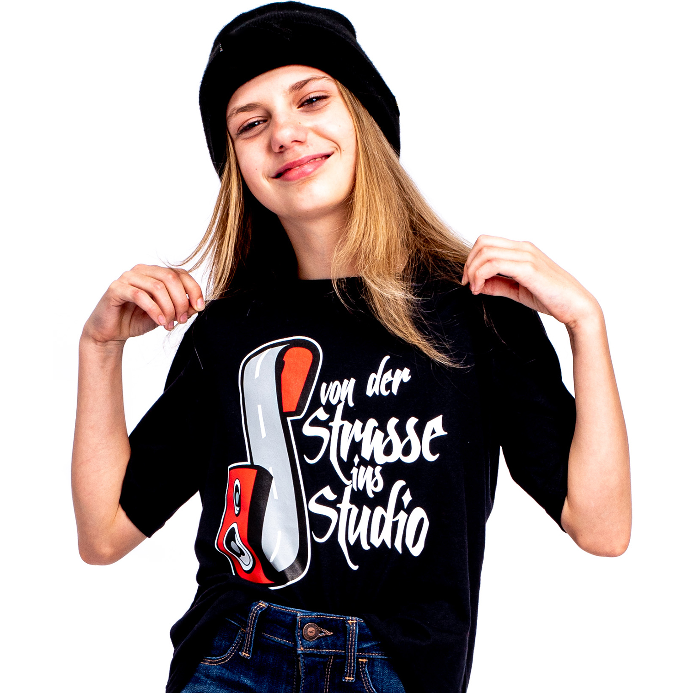
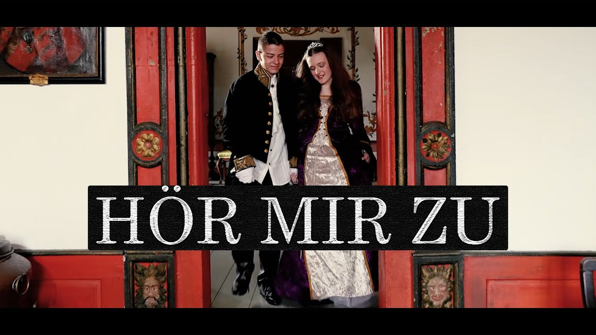
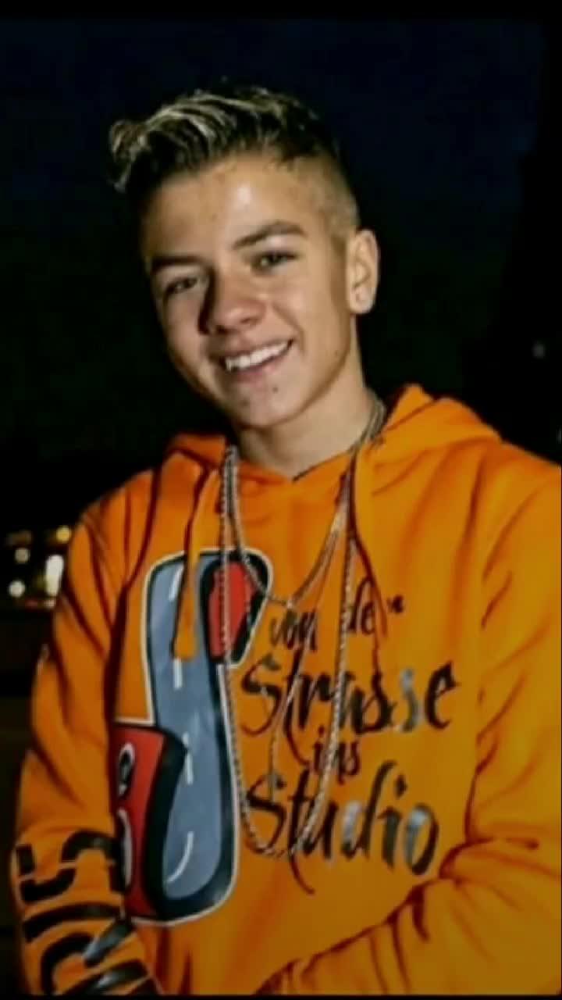

Timm hat 2010 VDSIS gegründet. VDSIS ist die Abkürtzung für Von Der Strasse Ins Studio. EKinder die gerne singen und vor allem Rapppen, können sich dort anmelden.In der VDSIS-Army kann man sich anmelden in Deutschland und in den Ländern drumherum.
NELE: Nele ist eine Rapperin und mein Idol. Ihr neustes Lied heisst "Flext"
MELIHA: Meliha ist wie Nele und ihr neustes Lied heisst "Wir sind ein Team"
DUSTIN: Der einzige Unterschied zu ihm und den anderen ist das er ein Junge ist. Sein neustes LIED heisst " Hör mir zu"
 1. Um die Welt
2.Vorbei
3.Madmoisell
4.cicas & Cicos
1. Dustin
2. Hey
3. Nur dir allein
4. Dreh die Zeit zurück
1. Du weisst
2. Ich lieb dich sehr
3. In die Galaxie
Sie veranstalten Rap-Workshops für Schulen, Vereine, Jugendeinrichtungen und Agenturen, bei denen sie mit den Kindern und Jugendlichen einen professionellen Song inklusive Musikvideo produzieren. Für die Produktion sind keinerlei Vorkenntnisse oder Vorerfahrungen seitens der Kinder notwendig. Ihr Team leitet und führt die Kinder jedes Mal sicher zum Erfolg. In der Regel wachsen die Workshopteilnehmer immer über sich hinaus und vollbringen eine Leistung, welche sie vorher nicht für möglich gehalten hätten.